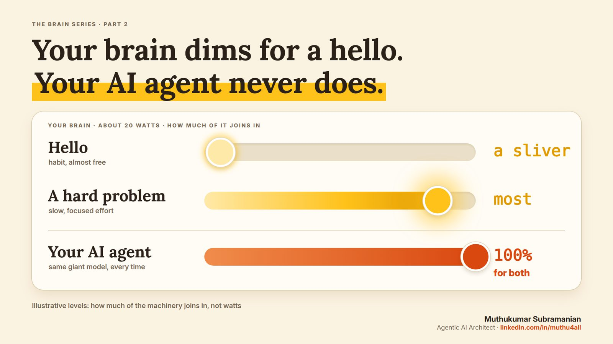
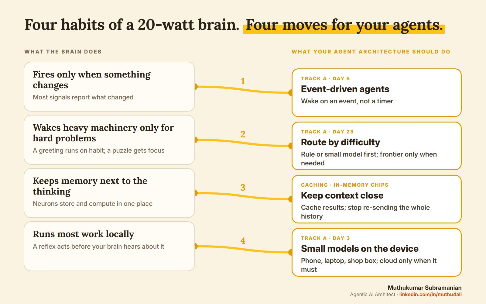
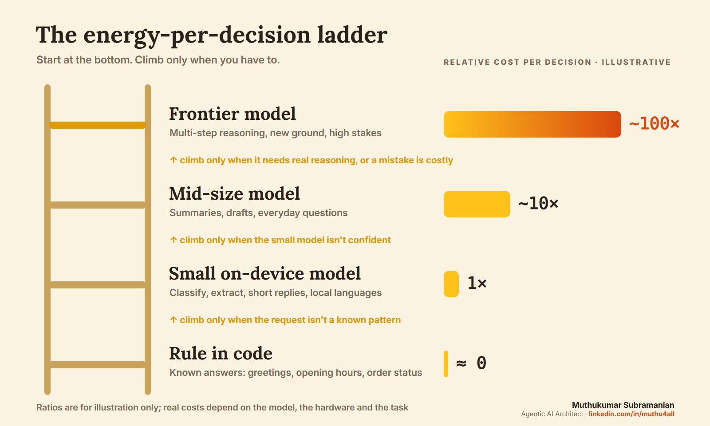
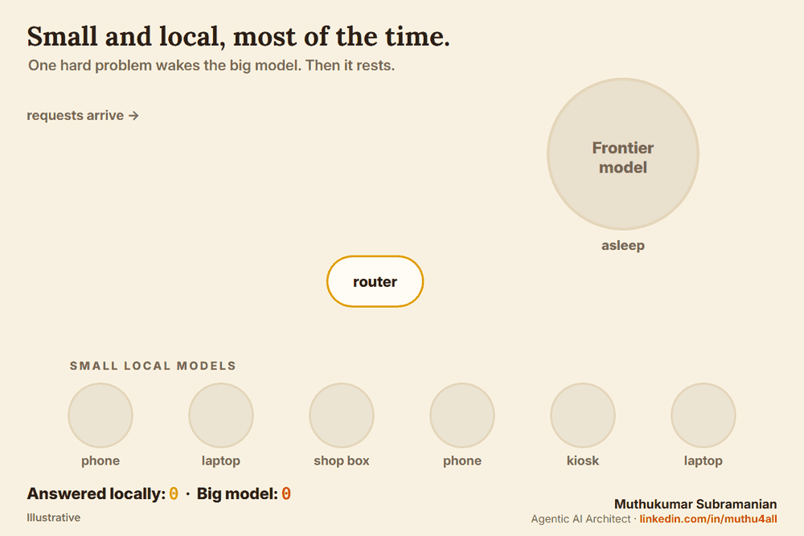

Your Brain Doesn't Use Full Power to Say Hello. Why Does Your AI Agent?
By Muthukumar Subramanian · Agentic AI Architect

Monday morning, 9:05, at the office gate. The security guard says "Good morning, sir." I say "Good morning" back, ask about his daughter's exams, and walk in.
I don't remember deciding any of it. My head was on a production issue the whole time.
Ten minutes later someone on my team types "hi" to our internal AI assistant. That one word travels to a data centre, runs through one of the biggest models we pay for, and comes back as "Hello! How can I help you today?"
The same giant model we use for contract analysis just said hello.
A correction I had to make while writing this
On Tuesday I wrote that 20 watts runs your whole body, and that AI agents only copy the part you notice. This is the follow-up: what the brain can teach us about designing agents.
I started with a neat idea: the brain turns itself down for easy things. Then I checked, and it's not quite true.
Your brain runs on about 20 watts, roughly a fifth of your body's resting energy, and that total barely moves. Neuroscientists who study the brain's energy budget find that focused effort adds only a few percent on top of what it uses at rest.
What changes isn't the wattage. It's how much of the machinery joins in. One well-known estimate suggests that fewer than 1% of the neurons in your cortex can be strongly active at the same moment. The brain is mostly quiet, all the time, and that's a design choice, not laziness.
So the dimmer in my head isn't a power dial. It's a "how much of me does this need?" dial.
Most AI agents don't have one.
Four lessons from the brain, four architecture moves
Here's how I map it for the teams I work with.

-
It fires only when something changes. Your eyes don't re-send the whole room to your brain every second. Much of your nervous system reports what changed, not what stayed the same. → Make agents event-driven: wake on an event, not on a timer. An agent that polls a mailbox every minute for "anything new?" is burning tokens to hear "no". (Day 5 of my architecture series, "Your AI Agent Just Paid the Same Invoice Twice.", has the event-driven pattern.)
-
It wakes the heavy machinery only for hard problems. Greeting the guard runs on habit. Debugging the production issue pulls in slow, effortful attention. → Route requests. A rule or a small model takes the easy ones, and only the hard ones climb to the frontier model. (Day 23, "Your AI Agent Used the ₹200 Model for a ₹2 Job.", is the model-router pattern.)
-
It keeps memory next to the thinking. There's no separate memory chip in your head. Neurons store and compute in the same place. → Keep context close: cache what you've already worked out, reuse prompts and results, and stop re-sending the whole history to a far-away model on every call.
-
It runs most work locally. Your spinal cord pulls your hand off a hot stove before your brain hears about it. → Put small models on the phone, the laptop or the shop-floor box, and send only what truly needs it to the cloud. (Day 3, "Not Every Prompt Deserves a Data Centre.", covers small on-device models.)
AI researchers already borrow lesson 2 inside the model itself. Mixture-of-experts models hold many "experts" but run only a few for each word. DeepSeek V3, for example, has 671 billion parameters but uses about 37 billion for each token. Sparse, like the cortex.
The stake: energy per decision
Every request has an energy bill and a money bill. We rarely look at either per decision.
The International Energy Agency estimates data centres used about 415 terawatt-hours of electricity in 2024, around 1.5% of the world's total, and expects that to roughly double by 2030, with AI the biggest driver. Not all of that is agents saying hello. But some of it is.
A frontier model answering "hi" is like switching on every light in a stadium to find your keys.
The waste isn't using the big model. It's using it first.


What about brain-like chips?
Neuromorphic chips try to copy the brain's hardware: spiking neurons that fire only on change, with memory sitting right next to compute. Intel's Hala Point, built from 1,152 Loihi 2 chips and installed at Sandia National Laboratories in 2024, supports up to 1.15 billion artificial neurons and draws up to about 2,600 watts. IBM's NorthPole, described in Science in 2023, puts memory and compute on the same chip and showed big efficiency gains for image recognition.
Honest view: both are research systems. You won't run your customer-service agent on one next year. But they point the same way as the four lessons above, and the lessons work on today's hardware.
The hard parts
Routing can be wrong with confidence. A small model that misreads a hard question as an easy one gives a fast, cheap, wrong answer. You need a way to climb when the small model isn't sure.
Measuring energy per request is hard. Most providers don't publish it, so you'll be using cost as a stand-in, and cost isn't carbon.
Cheaper decisions invite more decisions. If each answer costs a tenth, teams may ask ten times as often, and the total power bill may not fall at all.
And the brain analogy has limits. The brain is terrible at what computers are perfect at. Nobody wants a payroll that's roughly right.
There's a new kind of job in this. An AgentOps Engineer, someone who runs agents in production the way SRE teams run services, will soon track cost per decision next to latency and accuracy. A forward deployed engineer (FDE), who sits inside the customer's team, is often the one who finds that 70% of requests never needed the big model. Both titles are still settling. The savings are real.
The opportunity
If I were advising a CTO today, I'd ask for one new number on the dashboard: cost per decision, split by which rung answered it.
Services that will matter:
→ Routing audits: find the requests going to the wrong rung
→ On-device model packs for Indian languages, so a Tamil "vanakkam" never needs a GPU in another country
→ Event-driven redesigns for agents that poll
→ Energy and cost reporting per agent, for CFOs and sustainability teams
Your brain is 20 watts of "only as much as needed." Your agents can learn the same habit.
Your turn 👇
Where should your agent's first answer come from: a rule, a small model or the biggest model? Pick one.
Tag the engineer who sends "hi" to the most expensive model in your stack.